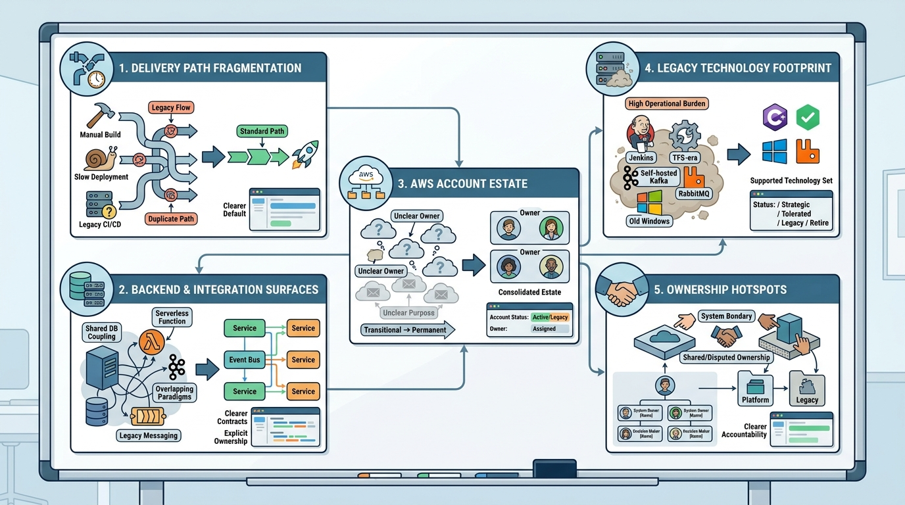

Roadmap and Targets
First Targets: Where to Concentrate the First Wave of Simplification

Image generated by Google Gemini (gemini-3-pro-image-preview)
Roadmap and Targets

Image generated by Google Gemini (gemini-3-pro-image-preview)